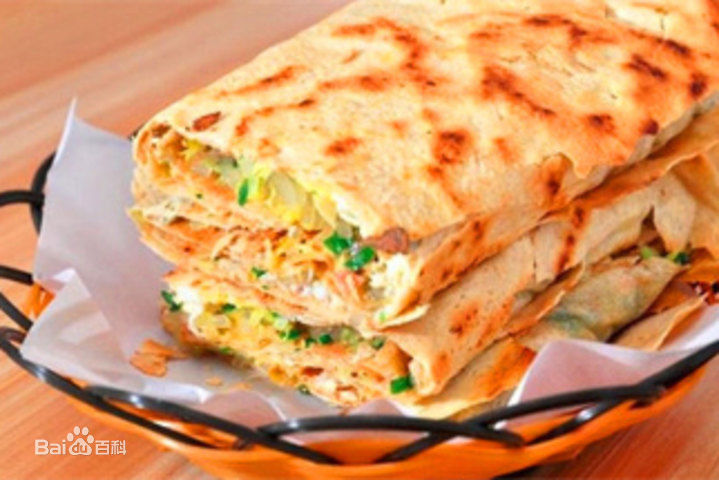
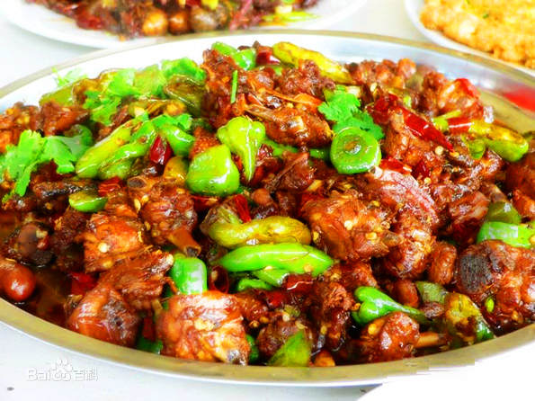
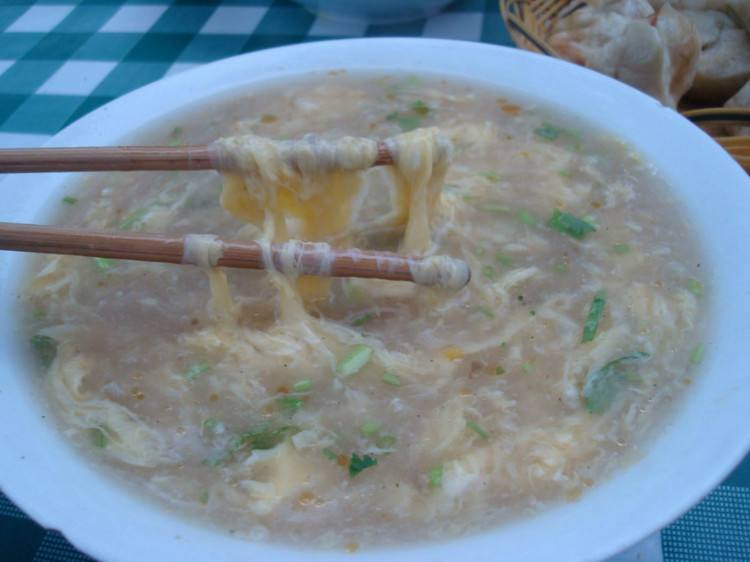

菜煎饼

滕州菜煎饼，是一个起源于山东滕州的名小吃，创始人为清代的王牛臯（外号王怪物）。以独家专用神秘香料配制，口感酥松香嫩，独树一帜，深得人民喜欢。
在新烙出来的煎饼上摊上食用油、鸡蛋、火腿肠和各种时令青菜，加热熟透，卷上几下，再分成几块，用洁净的纸一包，捧在手里，香气扑鼻，让人胃口大开。菜煎饼营养丰富，吃起来方便快捷，既可当早点，也可作正餐。
枣庄辣子鸡

枣庄是中国辣子鸡之乡，枣庄辣子鸡也称“枣庄大盘辣子鸡”，为鲁南地区颇具特色的美食，其特点是鲜、辣、香，色艳味重。烹炒鸡肉多以本地散养公鸡为佳，其中最以老公鸡和小公鸡最为优选。现又被枣庄的厨师们创造性的开发出一些列的衍生菜：小鸡泡馍、麻花辣子鸡、面条鸡、地锅饼辣子鸡等。与川菜的辣子鸡不同，枣庄辣子鸡更注重鲜、辣、香、嫩，多汁。色艳味重，嫩鸡肉加大量鲜辣椒、米醋爆炒，想起来就流口水。辣子鸡多以公鸡烹炒，因为公鸡较之母鸡更具有“阳刚”之气，公鸡又以“本地鸡”为佳，本地鸡以小公鸡和老公鸡为主，小鸡吃起来鲜嫩可口，几乎不用吐骨头，老鸡吃起来回味无穷，啃也啃不够。吃辣子鸡喜好也有所不同，有人爱吃老公鸡，因为老公鸡有嚼劲儿，一年以上的老公鸡最合意，还有部分人爱吃小公鸡，村里庄户人家养到六七个月大的小公鸡，烹煮起来，鲜嫩可口，几乎不用吐骨头，一口下去，鲜嫩多汁，独有的辣味充斥唇齿之间，吃一块要连呼几口气，以缓解辣味，手举筷子却欲罢不能的不停夹取，不油不腻的鸡肉，越吃味道越浓。
糁汤

糁（Sá）汤，又名“肉粥”，一种传统名吃，流行于鲁、豫、苏、皖四省交界的很多地方，多认为是山东省枣庄市的特色，现为当地百姓的平常早餐。该类早餐做工复杂，故当地百姓都是在早餐店内买食。其汤为骨头汤，需熬制4个多小时，配以打碎鸡蛋，用大骨汤一冲，再配以姜末、香菜、香油等佐料。正宗的糁（Sá）汤应为乳白色，是鲁西南、安徽、江苏地区一致认可正宗的口味。一些地区有所谓的黑糁，都是近年来一些当地穷苦大众自己所谓的产物，并不具有代表性。糁（Sá）汤并不放肉，只是肉汤与鸡蛋，只有羊汤与牛肉汤才放肉，这也是一个区别正宗糁（Sá）汤与不正宗的。